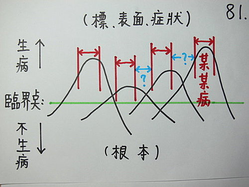

脈理醫理學 3.0.1：病譜連續（二）‥‥‥病譜連續的模型——由病譜連續的模型來看西醫的漏洞、套方式中醫的漏洞、古中醫（病譜連續→→脈譜連續）。（1）
作者：陳建元
在第 3 條時講到「病譜連續」這個概念，病譜連續是藥王脈學中一個很重要的概念。

〈圖81〉是病譜連續的模型。由這個模型我們可以探知目前很多醫學的漏洞點在什麼地方，提醒我們去注意。
圖中綠色線是臨界點（線），這是代表人的疾病經由病邪和正氣的雙方交戰之後，如果正氣戰勝則走向不生病的一方，如果病邪戰勝則走向生病的一方。
圖中的山峰代表人的疾病，山峰的根部在臨界線之下代表疾病的初起狀態常是科學儀器尚未檢查出來的「亞健康狀態」，但是病根已經存在了，這個是疾病的根本。
當身體失去平衡之後，疾病就慢慢的出現，就像山峰慢慢的高起，每個山峰高低不等，代表每個疾病對人體的破壞力高低不等。每個山峰與山峰之間有相連，代表每個病種與病種之間並不是各自獨立而分開的，而是彼此都有相關性的。譬如高血脂、心肌梗塞、高血壓三者之間互為因果關係。譬如過敏性鼻炎、肥厚性鼻炎、鼻息肉之間也互有因果關係。
紅色雙箭頭部分，代表目前主流西醫學是以疾病種類為主來嘗試掌握人體身上的疾病，山的尖峰代表這種方法是以疾病的明顯特徵和實驗數據來判別疾病的，譬如有明顯的上呼吸道流鼻水、咳嗽、鼻塞症狀和血液檢查白血球無變化或略下降，基本上就被判定是上呼吸道感染。山的尖峰是代表特徵明顯時會被用來作上述的判斷，山與山之間的山谷是代表當特徵不明顯和實驗數據不明顯時，就會被忽略當成沒有疾病（藍色雙箭頭部分）。但事實上山谷的部份仍然是突出臨界線，也應該算是疾病狀態，只是尚未被研究命名或處於兩種疾病的灰色中間地帶，不知道該歸屬那部分而已！
譬如癌症出現前有一段很長時間的癌前變期，卻無法被診斷出來；譬如糖尿病是缺胰島素，但胰島細胞為什麼會喪失這些功能就不知道了（就像一個圖釘釘在屁股上，如果真正找到病因，把圖釘拔掉，當然就不用天天吃止痛藥而能斷根不痛，這樣才算真正瞭解這種疾病；但如果沒找到病根是圖釘，而是天天痛天天要服止痛藥治標，這並不能算是真正瞭解這種疾病！）病譜連續模型解釋了目前醫學存在的很多漏洞和空窗，這是不可諱言的，因為病譜是連續的，並不是各自斷斷續續的山頭。
上面這麼說，一定會有很多西醫反駁說，西醫的病名分類，絕對是精準而科學的，不會有什麼漏洞！真的是這樣嗎！？看看教科書不就是最標準的答案了嗎！？看看10年前的教科書中內科有幾個病名？再看看10年後現在的教科書中內科又有幾個病名？是不是多出很多？以前沒有黴漿菌性咳嗽這個病種，也沒有代謝症候羣這個病種，這是再明顯不過的證據了！一年比一年多的疾病條目，就是拿來填補西醫疾病譜上的漏洞，也能預計10年後，還會有一大堆，新的疾病條目出現。
下接脈理醫理學 3.0.2：病譜連續（三）‥‥‥病譜連續的模型——由病譜連續的模型來看西醫的漏洞、套方式中醫的漏洞、古中醫（病譜連續→→脈譜連續）。（2）
【引用請先來信告知徵求同意，若有涉及販售營利等商業行為，版權所有拷貝盜用必究。】
【藥王脈學講壇】http://blog.xuite.net/drjychen/twblog